![[surgical0]](surgical0.bmp) Surgical: Institutional ranking
Surgical: Institutional ranking
This example considers mortality rates in 12 hospitals performing cardiac surgery in babies. The data are shown below.
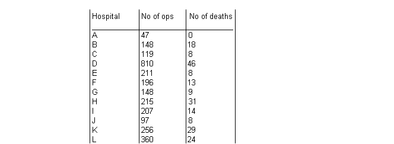
The number of deaths r
i
for hospital
i
are modelled as a binary response variable with `true' failure probability p
i
:
r
i
~ Binomial(p
i
, n
i
)
We first assume that the true failure probabilities are
independent
(
i.e
.fixed effects) for each hospital. This is equivalent to assuming a standard non-informative prior distribution for the p
i
's, namely:
p
i
~ Beta(1.0, 1.0)
Graphical model for fixed effects surgical example:
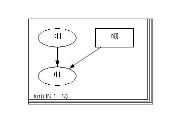
BUGS
language for fixed effects surgical model:
model
{
for( i in 1 : N ) {
p[i] ~ dbeta(1.0, 1.0)
r[i] ~ dbin(p[i], n[i])
}
}
Data
( click to open )
Inits for chain 1
Inits for chain 2
( click to open )
A more realistic model for the surgical data is to assume that the failure rates across hospitals are
similar
in some way. This is equivalent to specifying a
random effects
model for the true failure probabilities p
i
as follows:
logit(p
i
) = b
i
b
i
~ Normal(
m
,
t
)
Standard non-informative priors are then specified for the population mean (logit) probability of failure,
m
, and precision,
t
.
Graphical model for random effects surgical example:
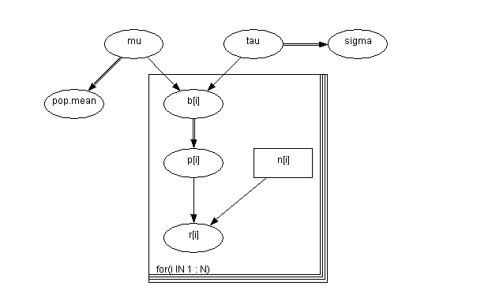
BUGS
language for random effects surgical model:
model
{
for( i in 1 : N ) {
b[i] ~ dnorm(mu,tau)
r[i] ~ dbin(p[i],n[i])
logit(p[i]) <- b[i]
}
pop.mean <- exp(mu) / (1 + exp(mu))
mu ~ dnorm(0.0,1.0E-6)
sigma <- 1 / sqrt(tau)
tau ~ dgamma(0.001,0.001)
}
Data
( click to open )
Inits for chain 1
Inits for chain 2
( click to open )
Results
A burn in of 1000 updates followed by a further 10000 updates gave the following estimates of surgical mortality in each hospital for the fixed effect analysis
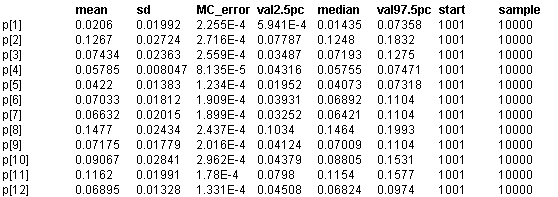
and for the random effects analysis
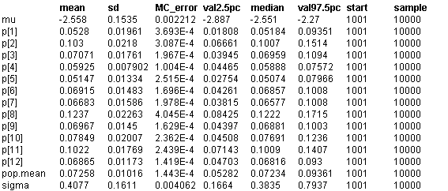
A particular strength of the Markov chain Monte Carlo (Gibbs sampling) approach implemented in
BUGS
is the ability to make inferences on arbitrary functions of unknown model parameters. For example, we may compute the
rank
probabilty of failure for each hospital at each iteration. This yields a sample from the posterior distribution of the ranks.
The figures below show the posterior ranks for the estimated surgical mortality rate in each hospital for the random effect models. These are obtained by setting the rank monitor for variable p (select the "Rank" option from the "Statistics" menu) after the burn-in phase, and then selecting the "histogram" option from this menu after a further 10000 updates. These distributions illustrate the considerable uncertainty associated with 'league tables': there are only 2 hospitals (H and K) whose intervals exclude the median rank and none whose intervals fall completely within the lower or upper quartiles.
Plots of distribution of ranks of true failure probability for random effects model:
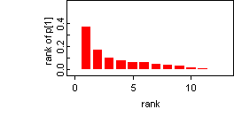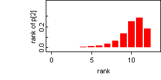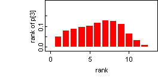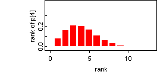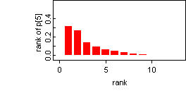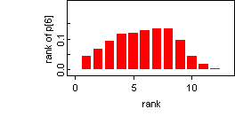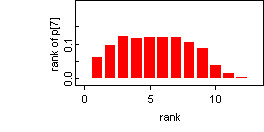![[surgical13]](surgical13.bmp) 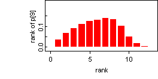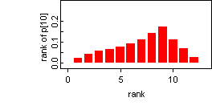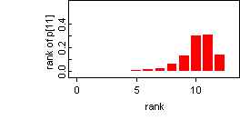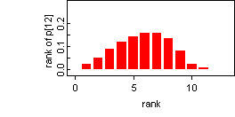
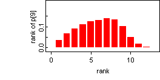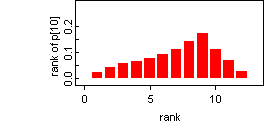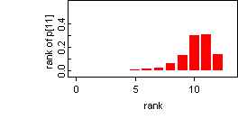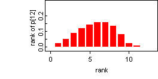